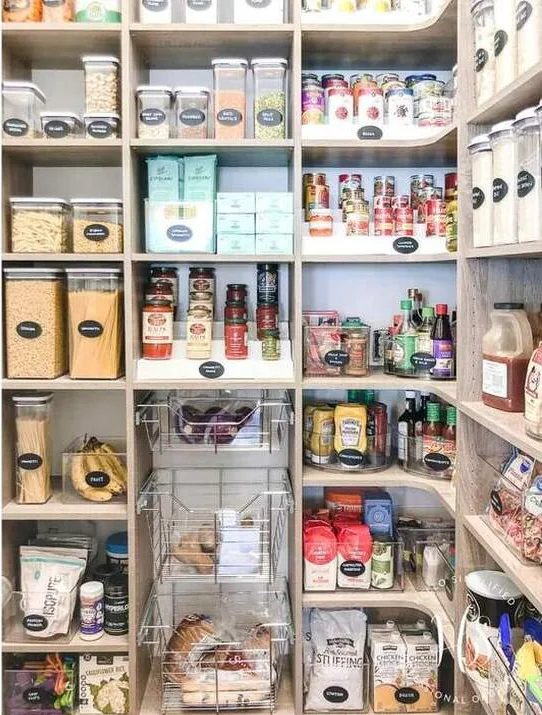
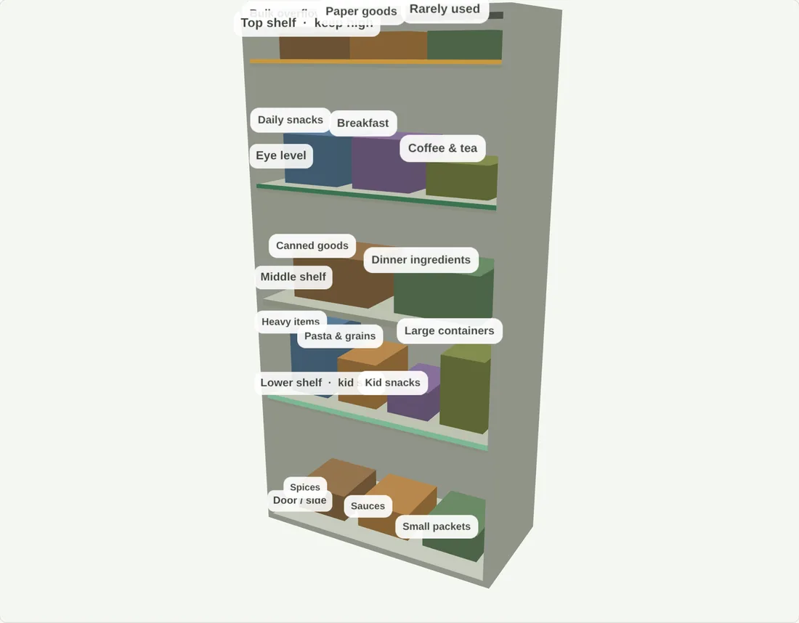

Bring order to the room that runs your day.
Photograph one space. Get a step-by-step plan built around your shelves, your household, and everything you already own.
Which space is running your day? Photograph it as it is, mid-week mess and all, and answer about ten minutes of questions.
No account needed to try it. Free while TidyMap is in early access.
Pick a space to start
Nine spaces across four rooms. Tap one and the planner opens there.
Each one is fitted to your setup, whether that is a cabinet, reach-in, walk-in, L-shaped run, drawer tower, vanity, utility shelving, or workbench, and to who has to reach it.
What you get
Three parts, in every plan.
Fig. 2Where things go
Every shelf becomes a zone, and each one says why.
Fig. 3Step-by-step
Short, timed steps. Do one tonight or the lot on Saturday.
Fig. 4Optional purchases
Sized to your shelves, only if you ask. The $0 plan works without them. TidyMap may earn a commission on qualifying purchases made through retailer links. Prices stay the same for you.
See a finished plan
One example, a family pantry. Every space gets the same treatment.

Plan excerpt
| Zone | What goes here |
|---|---|
| Eye level | Daily snacks, breakfast, coffee & tea |
| Lower shelf | Kid snacks and heavy items, so nobody climbs |
| Top shelf | Bulk overflow and rarely used things |
Nine steps, 45–90 minutes, $0 to start.

How it works
-
Show the space as it is
A few photos, mid-week mess and all. No tidying up first.
-
Answer a few questions
Who uses it, what’s inside, how much time you’ve got. Your photos are read when the plan is built, so it can say what is actually on your shelves.
-
Work through the steps
Each one is short and timed. Pause for school pickup; the plan holds.
About ten minutes of questions. The plan comes back the same session.
What we promise
- We start with what you own.
- Every plan begins at $0, on your existing shelves and bins.
- Safety is planned in.
- Hazards go high or behind a latch; kids’ things stay reachable.
- Purchases stay optional.
- Product ideas are off unless you ask, and clearly marked.
- The plan bends to you.
- Change a zone, lower the effort, swap a step.
Who’s behind this
TidyMap is built by SCM Solutions, a small team, and is free while it’s in early access.
The rules behind every plan are ordinary professional practice: daily things at eye level, heavy things low, kids’ things reachable, hazards not. The AI reads your photos and applies them. Its job is narrower than you’d think.
How photos are handled
They build your plan. Without an account they aren’t stored afterward. Details in the privacy policy.
Product suggestions
They come from a hand-checked list of real retailer items, never invented ones, and they’re chosen by what fits your shelves. .
Occasional updates
Get occasional product updates and practical organizing ideas.
A couple of emails a month at most. Unsubscribe any time.
Products that help
Everything TidyMap can suggest, grouped by the space it belongs in. Every plan works at $0 without any of it. This is the shortcut for when you already know you want the bins.
Plan the space first and TidyMap checks each product against your measurements before it suggests anything.
Which space needs sorting out?
Pick the one spot we'll plan first. Small wins stack up, and you can always come back for another.
Which one looks like your pantry?
Go by the picture. This shapes your 3D layout and where each zone lands.
How big is your pantry?
Close is plenty: drag the slider or type it in. This sizes your plan and the 3D preview.
Add a few honest photos
Mid-week mess and all. That's exactly what helps. A wide shot plus a couple of close-ups is perfect.
Photos are optional. Without them we build the plan from your measurements and answers, which works. It just won't describe what's actually on your shelves.
Photos are used only to build your plan. Without an account, they aren't stored afterward.
Who uses this space?
This decides what goes within easy reach and what gets tucked up high or behind a latch.
Anyone who needs things easy to reach? (pick any)
Anything you can’t do to the walls? (pick any)
Anything else we should know? (optional)
400 characters left
What's kept in here?
Tap everything that lives in this space. We'll group them into zones that make sense together.
What bugs you most about it?
Be honest. The plan leans hardest on whatever you pick here.
How do you like things kept?
Pick as many as feel like you. Together they set the tone of your plan.
How big a project is this?
We'll size the steps to the time you actually have.
New containers, or work with what you have?
Either way the plan works. Product ideas are always optional and clearly marked.
Here's what we heard
Change anything that's off, then build your plan.
Putting your plan together
Placing zones, sorting by reach, and keeping the little ones in mind.
Key frames extracted
The pantry, with a place for everything

Summary
Where things go
Use what you already have first
Step-by-step
Work top to bottom. Mark steps complete as you go.
What it could look like
An illustrated layout of the recommended plan. Each shelf is a labeled zone. With a photo of your space, you can also see it edited to match the plan.
This is an illustrated layout of the plan, not a photo of your space. It shows where each group of items should go. Actual fit depends on item sizes and containers.
Rotate, zoom, and drag items between shelves to test a different arrangement before you touch a thing.
Optional purchases
Only because you said you’re open to buying storage products. The $0 plan above works without any of these.
Adjust your plan
Pick a change and we’ll revise the plan.
Your plan is ready
Save it, share it with the household, or start organizing your next space.
How useful is this plan?
Was the step-by-step plan more useful than just seeing an after image?
What would make this better?
What space would you organize next?
Thanks, you already sent this
We have your feedback on this plan. It goes straight into what we build next.
Your space, standing up
Drag to spin it around, scroll to zoom. The model matches your space’s layout and size. Switch types below to compare.
Set exact sizes
Your spaces
Thank you
Your feedback tells us if a real plan beats a pretty picture. That’s what we’re here to find out.